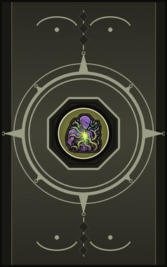

Technique trees › Clans and bloodlines
Zassou clan
9 techniques in the Clan tab.
Needs the Zassou gene.
Vine Scythe CB
Chakra 15 to 25. A vine from the elbow hardens into a scythe for half an hour.
Vine Scythe CB
Chakra 15 to 25. A vine from the elbow hardens into a scythe for half an hour.
A vine from the elbow hardens into a scythe for half an hour.
| Rank | Chakra | Cooldown | Class level |
|---|---|---|---|
| C | 15 | 1.2 hours | 4 |
| B | 25 | 1.2 hours | 9 |
Vine Armour CB
Chakra 15 to 25. Vines harden and wrap the body for half an hour.
Vine Armour CB
Chakra 15 to 25. Vines harden and wrap the body for half an hour.
Vines harden and wrap the body for half an hour.
| Rank | Chakra | Cooldown | Class level |
|---|---|---|---|
| C | 15 | 1.2 hours | 6 |
| B | 25 | 1.2 hours | 10 |
Venomous Thorns B
Chakra 30. The vines bristle with venomous thorns for a minute, stinging anyone close.
Venomous Thorns B
Chakra 30. The vines bristle with venomous thorns for a minute, stinging anyone close.
The vines bristle with venomous thorns for a minute, stinging anyone close.
| Rank | Chakra | Cooldown | Class level |
|---|---|---|---|
| B | 30 | 1.6 hours | 9 |
Chakra Sucker C
Chakra 20. Vines latch onto an enemy and drain their strength.
Chakra Sucker C
Chakra 20. Vines latch onto an enemy and drain their strength.
Vines latch onto an enemy and drain their strength.
| Rank | Chakra | Cooldown | Class level |
|---|---|---|---|
| C | 20 | 25 s | 6 |
Vine Dome B
Chakra 35. A dome of writhing vines around a spot blocks enemy shots for twenty-five seconds.
Vine Dome B
Chakra 35. A dome of writhing vines around a spot blocks enemy shots for twenty-five seconds.
A dome of writhing vines around a spot blocks enemy shots for twenty-five seconds.
| Rank | Chakra | Cooldown | Class level |
|---|---|---|---|
| B | 35 | 1.4 hours | 11 |
Silent Vine Strangulation A
Chakra 40. Vines from the fingertips strangle one enemy.
Silent Vine Strangulation A
Chakra 40. Vines from the fingertips strangle one enemy.
Vines from the fingertips strangle one enemy.
| Rank | Chakra | Cooldown | Class level |
|---|---|---|---|
| A | 40 | 1.2 hours | 13 |
Solar Bullet / Solar Beam BA
Chakra 25 to 55. Fire condensed sunlight: homing bullets at B rank, a beam that rips through everything in a line at A.
Solar Bullet / Solar Beam BA
Chakra 25 to 55. Fire condensed sunlight: homing bullets at B rank, a beam that rips through everything in a line at A.
Fire condensed sunlight: homing bullets at B rank, a beam that rips through everything in a line at A.
| Rank | Chakra | Cooldown | Class level |
|---|---|---|---|
| B | 25 | 15 s | 10 |
| A | 55 | 1.2 hours | 15 |
Solar Plant Sage S
Chakra 70. S-rank: the seed on the forehead blooms. For two minutes the user heals in the sun and hits much harder.
Solar Plant Sage S
Chakra 70. S-rank: the seed on the forehead blooms. For two minutes the user heals in the sun and hits much harder.
S-rank: the seed on the forehead blooms. For two minutes the user heals in the sun and hits much harder.
| Rank | Chakra | Cooldown | Class level |
|---|---|---|---|
| S | 70 | 12 hours | 18 |
Chakra is the technique's base cost, the number in its def. In play it is multiplied by the pawn's chakra energy usage multiplier, which traits (chakra artificer 90%, volatile conduit 110%), World of Naruto genes and jutsu enhancements change, so the technique window can show a slightly different number for each ninja. Cooldowns are in-game time, as the technique window shows them, and the pawn's cooldown stat shortens or lengthens them. World of Naruto gives every ninja a base of 100 maximum chakra; genes and traits change it.